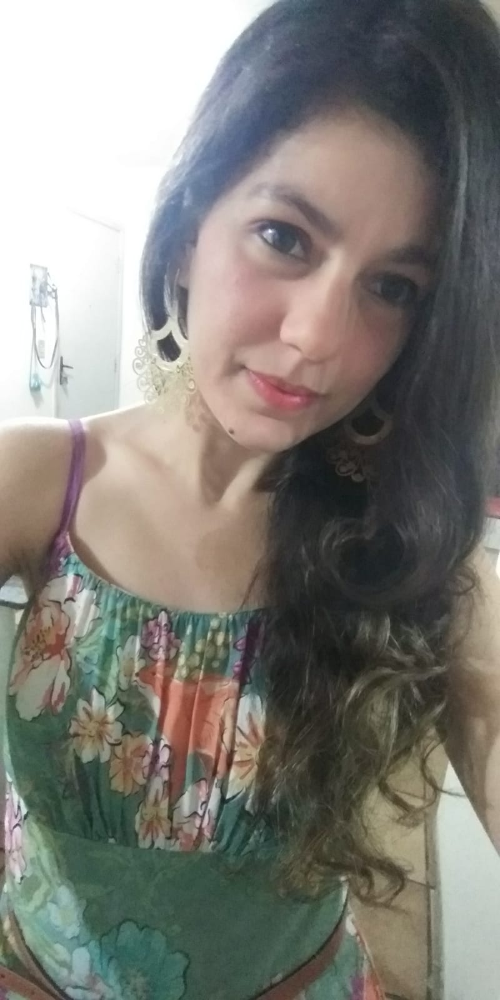

Edna Barboza de Lima

Minha formação acadêmica
Me conheça mais um pouco
Minhas habilidades
Brasileira, nordestina, nascida na cidade de Pesqueira -PE, sou uma pessoa de bem com a vida, proativa, dedicada e que gosta de ajudar as pessoas. Vivo atualmente em Recife-PE, onde me formei no curso de Química Industrial pela Universidade Federal de Pernambuco (UFPE). Estou pivotando minha carreira para a área de Tecnologia da Informação e fazendo curso de Desenvolvimento Web na Trybe e Análise e Desenvolvimento de Sistema na FACAP-UCA. No ramo acadêmico fiz pós-graduação stricto sensu (mestrado e doutorado), onde atuei como pesquisadora liderando projetos interdisciplinares com elevado valor agregado para a sociedade. Já trabalhei em indústria química e como professora de química.
- Trybe - Cursando Desenvoldimento Web
- Faculdade Católica Paulista - FACAP -UCA - Cursando Análise e Desenvolvimento de Sistemas
- Universidade Federal de Pernambuco - UFPE - Pós doutorado em Química, Doutorado em Biotecnologia e Graduação em Química Industrial
- Universidade Federal Rural de Pernambuco - UFRPE - Mestrado em Química
- Universidade Federal do Vale do São Francisco - Univasf - Formação Pedagógica
Lista de Habilidades
- Química Analítica
- Ecologia Química
- Gestão de projetos
- Microbiologia
- Química dos alimentos
Mais um pouco sobre mim

Minha foto
Linkedin
Github
Currículo Lattles
Blog que gosto
Minha página no Youtube